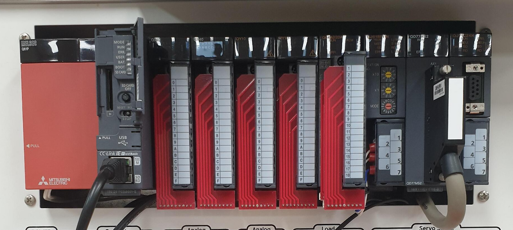

04.01
재료 투입·가공·분류·창고 적재·배출
유도형 근접센서로 금속·비금속을 구분하고 두 종류 모두 창고에 적재·배출하도록 공정 시퀀스를 구성했습니다. 센서 입력과 공정 단계에 따라 다음 동작으로 이어지도록 PLC 래더를 작성했습니다.
- 재료 투입
- 가공
- 금속·비금속 판별
- 창고 적재·배출
01 / OVERVIEW
유도형 근접센서로 금속·비금속을 구분해 창고에 적재 및 배출하는 PLC 자동화 시스템입니다. 재료 투입·가공·분류·적재·배출 시퀀스와 비상정지 기능을 구현했습니다.
PLC 비상정지 동작 시연
03 / SYSTEM

04 / IMPLEMENTATION
유도형 근접센서로 금속·비금속을 구분하고 두 종류 모두 창고에 적재·배출하도록 공정 시퀀스를 구성했습니다. 센서 입력과 공정 단계에 따라 다음 동작으로 이어지도록 PLC 래더를 작성했습니다.
공정 조작, 적재 현황과 작업 수량을 확인하는 HMI 화면을 작성하고 PLC와 연동했습니다. 원점 복귀·위치 티칭·JOG와 창고·실린더 수동 조작 화면도 구성했습니다.


공정 운전을 유지하는 자가유지와 동작 조건을 제한하는 인터록, 비상정지 로직을 구성했습니다. HMI 조작과 PLC 공정 제어를 연결해 운전·정지 조건을 반영했습니다.